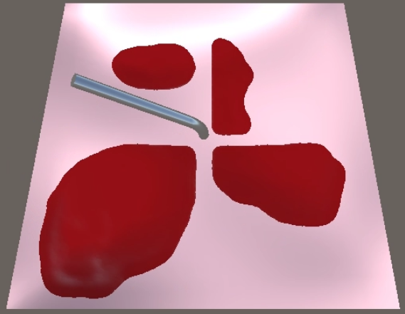
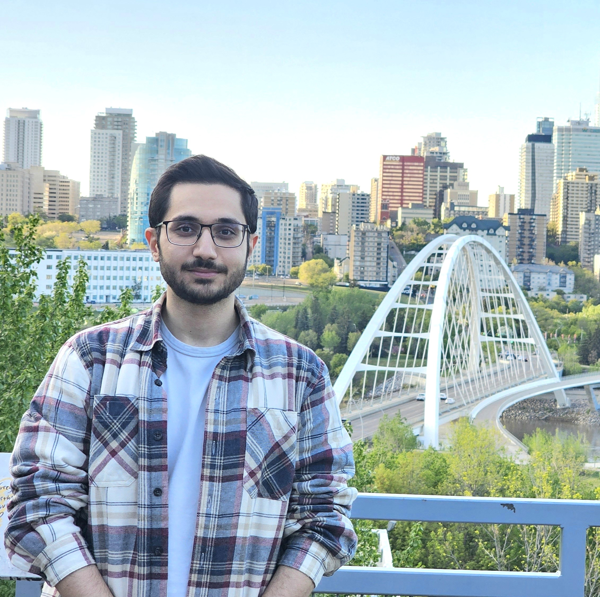
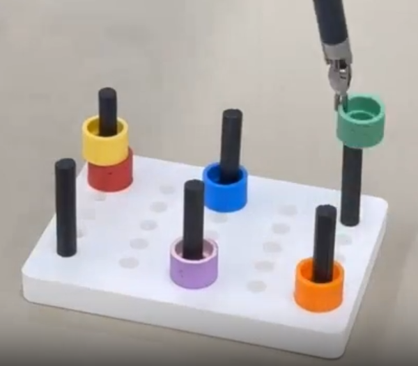
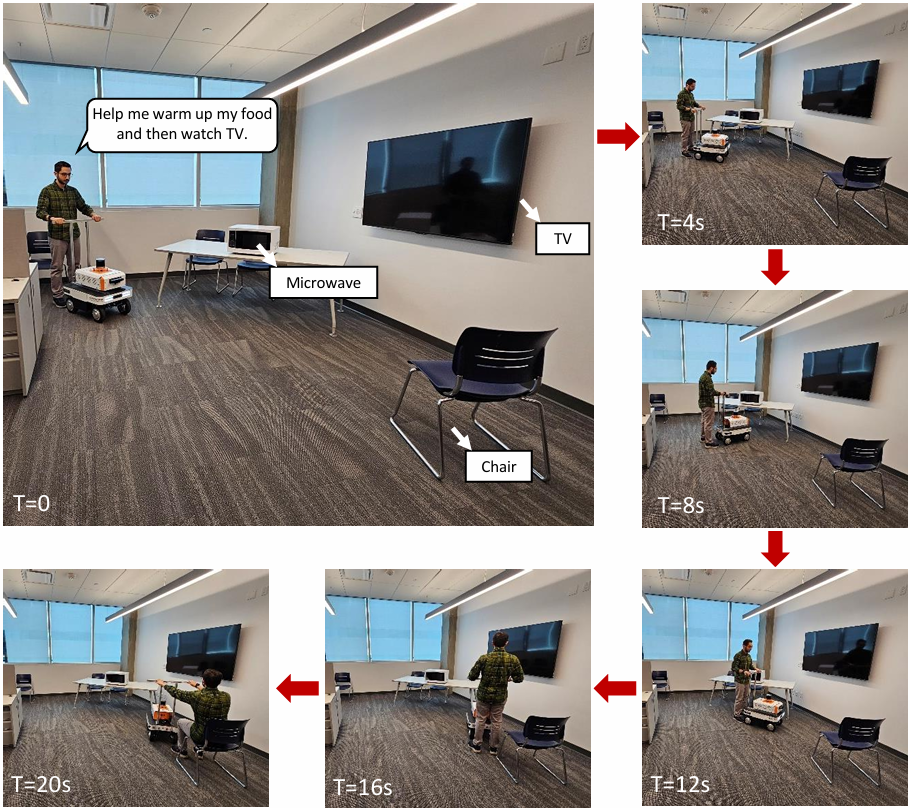
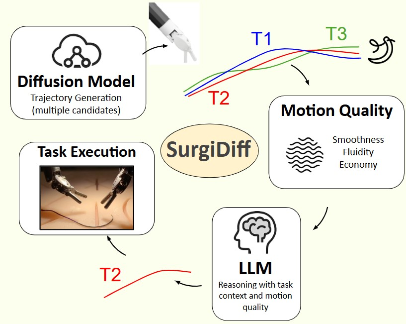

From Decision to Action in Surgical Autonomy: Multi-Modal Large Language Models for Robot-Assisted Blood Suction
IEEE Robotics and Automation Letters (RA-L), 2025

I am an M.Sc. candidate at the University of Alberta advised by Prof. Mahdi Tavakoli, where I work on multimodal foundation models and surgical robot learning. My research aims to build intelligent robotic systems that can perceive, reason, and act safely in medical environments.
I've also research positions at the Vector Institute, ETH Zurich (Soft Robotics Lab), and EPFL (CREATE Lab) through competitive fellowships and internships, working on surgical and soft robotic systems. I received my B.Sc. in Mechanical Engineering from Sharif University of Technology.

From Decision to Action in Surgical Autonomy: Multi-Modal Large Language Models for Robot-Assisted Blood Suction
IEEE Robotics and Automation Letters (RA-L), 2025

Enhanced Reasoning and Task Planning for Surgical Autonomy Using Multi-Modal Large Language Models With Gradual Learning
Journal of Biomimetics, Intelligence and Robotics, 2025 (Editor's Choice Paper)

Speak2Move: A Vision-Language-Based Semantic Mapping Framework for Autonomous Navigation in Assistive Robots
IEEE International Conference on Biomedical Robotics and Biomechatronics (BioRob), 2026

SurgiDiff: A Context-Aware Diffusion Recommender for Safe Surgical Autonomy
IEEE International Symposium on Medical Robotics (ISMR), 2026